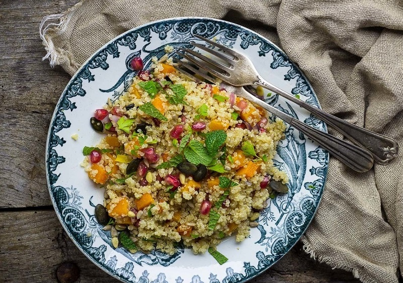
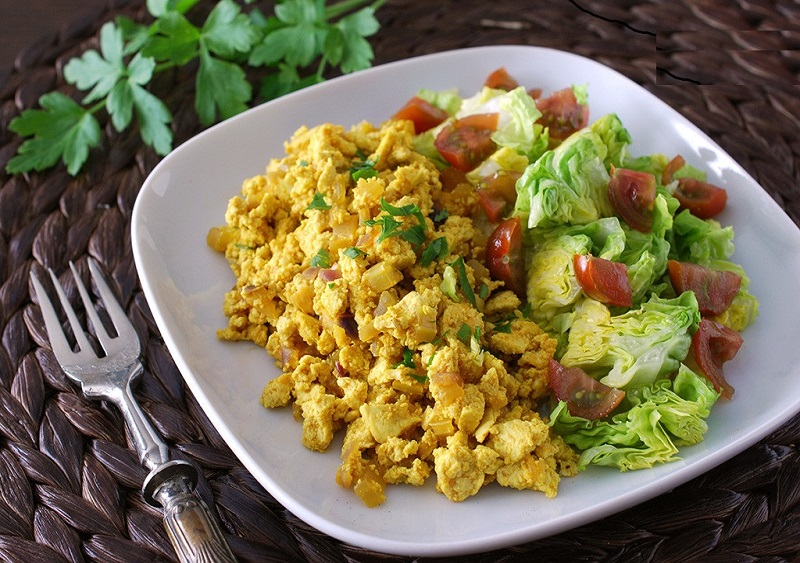
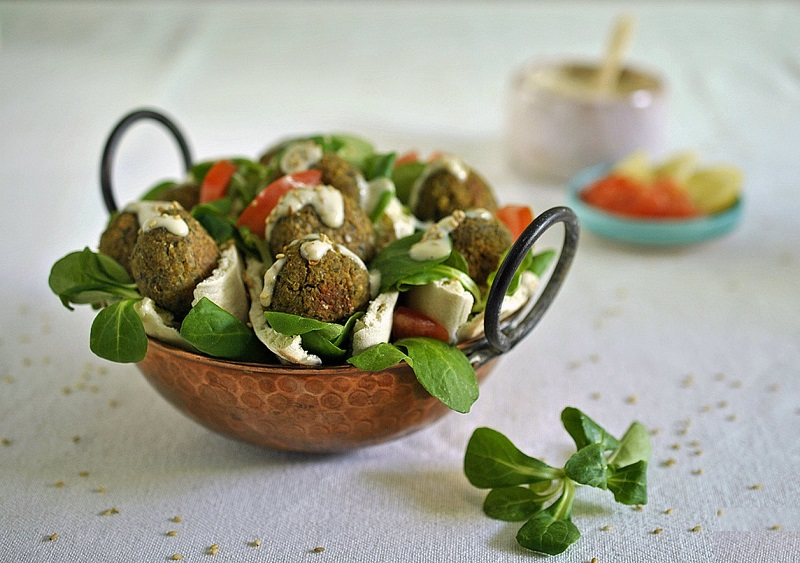

Recetario
Una dieta vegana bien planteada puede ser perfectamente saludable; el único suplemento obligatorio es el de vitamina B12. Hay muchos alimentos vegetales que nos pueden aportar las proteínas necesarias, pero si tenemos dudas lo mejor es consultar a nutricionistas especializados. Con estas recetas queremos demostrar que podemos preparar muchos platos veganos completos y deliciosos, y no hace falta ser vegano para disfrutarlos.
Fideos de arroz con tofu y pimientos

Ingredientes
- Fideos de arroz (120 grs)
- Pimiento rojo (1)
- Tofu firme (200 grs)
- Salsa de soja (15ml)
- Curry molido media cucharadita
- Ajo granulado cuarto de cucharadita
- Cúrcuma molida una cucharadita
- Pimienta negra molida
- Aceite de oliva virgen extra
- Sal
procedimiento
Desechar el líquido del tofu y escurrir bien. Envolver en varias capas de papel de cocina y dejar como mínimo 15 minutos con un peso encima. Cortar en cubos del tamaño de un bocado. Calentar un poco de aceite en una sartén y dorar el tofu por todos lados. Retirar. Cocer los fideos de arroz en agua hirviendo con un poco de sal durante unos tres minutos, siguiendo las instrucciones del paquete. Escurrir y enjuagar con agua fría, soltándolos un poco con un tenedor. Reservar. Rallar o picar fino el jengibre. Cortar el pimiento en tiras finas. Saltear en la misma sartén a fuego alto ambos ingredientes durante dos minutos. Salpimentar, agregar la salsa de soja y las especias. Rehogar 5 minutos. Devolver el tofu, dar unas vueltas e incorporar los fideos. Mezclar todo bien hasta que se integren. Servir con perejil picado.
Ensalada de quinoa, calabaza asada y granada
Ingredientes
- Calabaza (300 grs)
- Cebolla morada (1)
- Quinoa (200 grs)
- Salsa de soja (15ml)
- Cilantro fresco a gusto
- Granada (1)
- Jugo de limón (20 ml)
- Menta fresca
- Aceite de oliva virgen extra
- Mezcla de semillas
procedimiento
Comenzaremos precalentando el horno a 220 grados. Cortamos la calabaza pelada en dados y la cebolla morada en láminas y las asamos con un poco de sal y una cucharada de aceite de oliva durante 20 minutos. Por otra parte lavamos la quinoa y la cocemos en agua hirviendo con sal, durante 10 a 15 minutos. La escurrimos y la dejamos drenar totalmente. Combinamos el resto de ingredientes en un bol. Añadimos la quinoa, la calabaza asada y la cebolla, y removemos. Sazonamos y servimos con las hierbas picadas por encima.
Revuelto vegano de tofu
Ingredientes
- Tofu firme (250 grs)
- Tallo de apio (1)
- Cebolla roja (1)
- Jengibre a gusto
- Cilantro fresco a gusto
- Pimienta
- Ralladura de limón
- Pimentón dulce a gusto
- Aceite de oliva virgen extra
- Cúrcuma a gusto
procedimiento
Envolver en papel de cocina el tofu escurrido y dejar como mínimo 15 minutos con un peso encima. Picar muy fina la cebolla roja, el apio y el trocito de jengibre pelado. Calentar un poco de aceite en una sartén antiadherente y añadir el jengibre. Cuando empiece a soltar aroma incorporar la cebolla y el apio, salar y dar unas vueltas a fuego medio. Agregar el concentrado de tomate, las especias y un poco de vino. Cocinar unos 10 minutos. Desmigar el tofu con un tenedor hasta dejar una textura granulosa. Incorporarlo a la sartén, salpimentar y añadir un toque de ralladura de limón. Saltear y añadir un poco más de especias si se desea. En el caso de que quedara muy seco, agregar un poco de agua o caldo. Cocinar el conjunto unos 7-8 minutos y servir con perejil o cilantro fresco picado.
Falafel ligero
Ingredientes
- Garbanzos cocidos (300 grs)
- Cebolla morada (1)
- Levadura (1 cucharada)
- Pimentón a gusto
- Cilantro fresco a gusto
- Comino a gusto
- Jugo de limón (20 ml)
- Perejil
- Aceite de oliva virgen extra (30 ml)
- Dientes de ajo (2)
procedimiento
Lavar los garbanzos escurridos y triturar todos los ingredientes en el robot Magimix Cook Expert o robot de cocina, ajustando la textura con agua si fuera necesario. Tomamos pequeñas porciones de la masa y formamos bolitas de igual tamaño. Conviene humedecerse las manos para que la masa no se nos pegue. Las colocamos sobre una bandeja de horno cubierta con papel sulfurizado y aplastamos ligeramente con las manos. Dejamos reposar una hora en la nevera o en una zona fría de la cocina. Cocemos en horno pre calentado a 180ºC, arriba y abajo con calor tradicional, durante unos 20 minutos o hasta que estén dorados. Volteamos cada uno a media cocción, es decir, después de los primeros 10 minutos. Retiramos del horno y servimos inmediatamente.